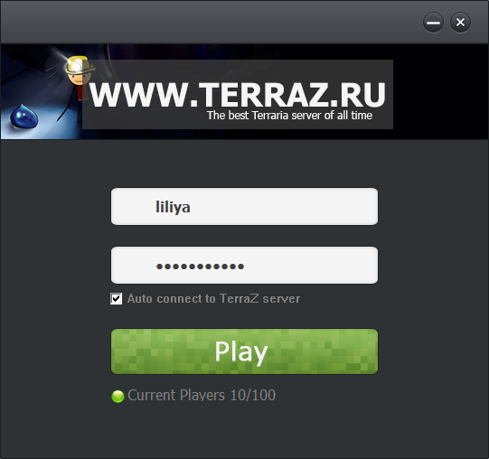

Welcome
Here you can download our Launcher.

Installation
To install the Launcher, you need to copy it into the game folder which contains "terraria.exe"
Client features
http://terraz.ru/client-features
Demo
Here you can see how the Launcher and the TarraZ Client work.
Warning
Using the Client has a side-effect: after get used to it, coming back to a normal one is painful and boring. If you feel that the project proposed by our software doesn't have a soul, please don't use it.
Source code
Launcher is 100% assembler written ;)Source code is private, and designed only fot TarraZ server.
invoke VirtualProtectEx,[pinfo.hProcess],eax,\
[virtual_size],PAGE_EXECUTE_READWRITE,ebx
test eax,eax
je .exit1
mov eax,[image_base]
add eax,[virtual_offset]
mov ecx,[mem]
add ecx,[raw_offset]
lea ebx,[hFile]
add eax,58h
add ecx,58h
sub [virtual_size],58h
invoke WriteProcessMemory,[pinfo.hProcess],eax,ecx,[virtual_size],ebx
test eax,eax
je .exit1
invoke CreateMutexA,0,0,webserver
mov [hMutex],eax
invoke ResumeThread,[pinfo.hThread]
invoke WaitForInputIdle,[pinfo.hProcess],-1
invoke CloseHandle,[hMutex]
False antivirus alert
Heuristic analysis assures protection against unknown threats, but its effeciency is far from being perfect, since false antivirus alerts occure.
If your antivirus doesn't allow you to use our software, please add it as exception.
Contact
If you are experiencing problems with our Launcher, please feel free to contact us: support@terraz.ru.